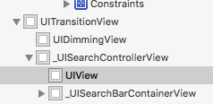

1. 使用方法
SearchResultController *vc = [[SearchResultController alloc] init];
self.searchController = [[SearchControllerOfContacts alloc] initWithSearchResultsController:vc];
[self.tableView setTableHeaderView:self.searchController.searchBar];
[self.searchController setSearchResultsUpdater:vc];
[self.searchController.searchBar setPlaceholder:NSLocalizedString(@"昵称、手机号", nil)];
self.resultController = vc;
此处是设置searchBar为tableView的头视图
注意
此处的searchConroller 和 searchResultcontroller都必须为该控制器的属性(即强引用住）
2. 自定义的UISearchController
我们可以继承自UISearchController，重写其initWithSearchResultsController方法即可:
- (id)initWithSearchResultsController:(UIViewController *)searchResultsController
{
if (self = [super initWithSearchResultsController:searchResultsController]) {
self.searchBar.layer.borderWidth = 1;
self.searchBar.layer.borderColor = [ITRGBColor(239.0, 239.0, 244.0, 1.0)CGColor];
[self.searchBar setBarTintColor:ITRGBColor(239.0, 239.0, 244.0, 1.0)];
[self.searchBar setValue:@"取消" forKey:@"_cancelButtonText"];
UITextField *tf = [[[self.searchBar.subviews firstObject] subviews] lastObject];
[tf.layer setMasksToBounds:YES];
[tf.layer setBorderWidth:0.5f];
[tf.layer setBorderColor:[UIColor colorWithWhite:0.5 alpha:0.3].CGColor];
[tf.layer setCornerRadius:5.0f];
}
return self;
}
3.深度解析UISearchController 以及其SearchResultControll原理
当UISearchController出现时，UISearchController也是一个控制器就相当于模态出来一个控制器


我们可以看出来 我们首先从原来控制器模态出来我们自己的UISearchController 而UISearchControllView就是这个控制器的View即蓝色部分 而搜索结果的显示即在其上加了一个View这个view即为我们的搜索结果控制器的view
因此我们改变这个SearchControllView颜色并不会影响显示 但是如果把其上加上别的视图 就会影响结果的显示的

可以看到显示结果的View被我们后加的tableView挡住了,这时候我们可以sendSubviewToBack来直接将tableView放置到显示结果的view后面即可了
3.UISearchController 上的searchBar原理
显示的searchBar是因为searcontroller上有一块searBarContainView 在其上放置了searchBar,还有背景图片 取消按钮等